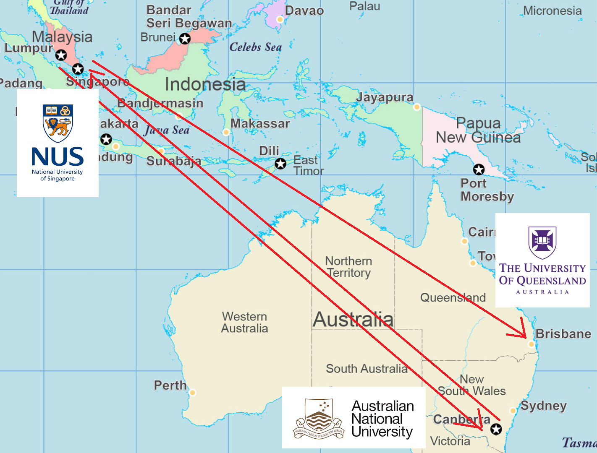
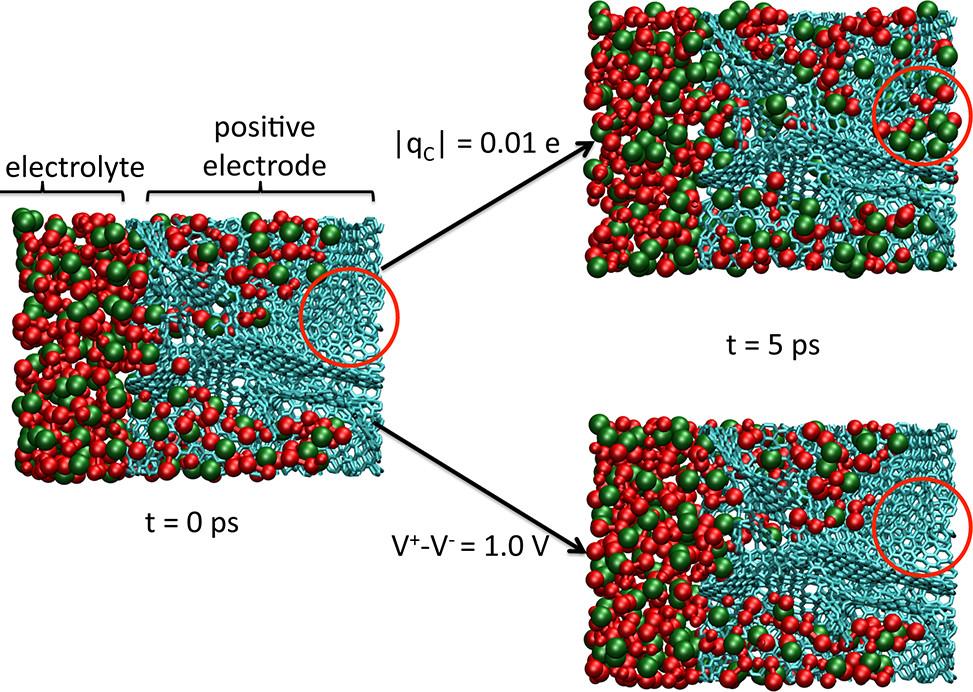
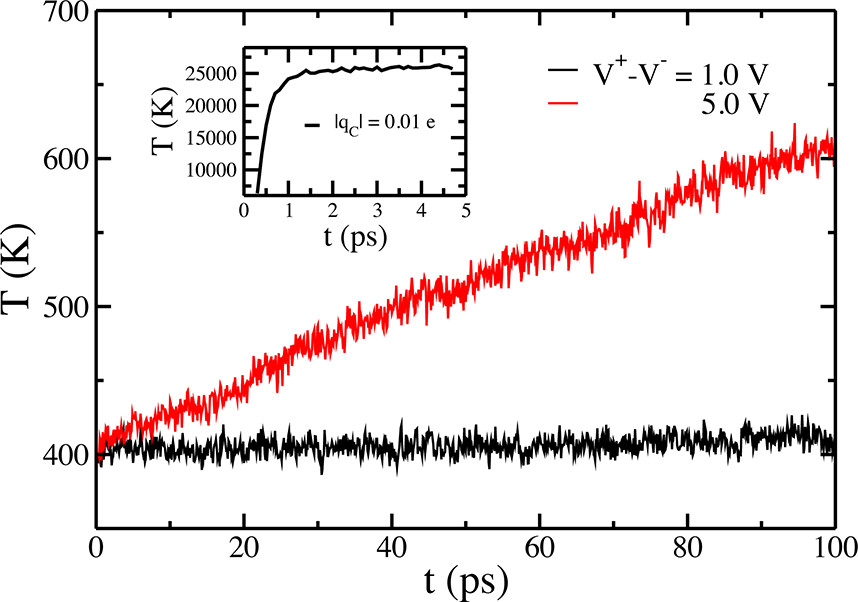
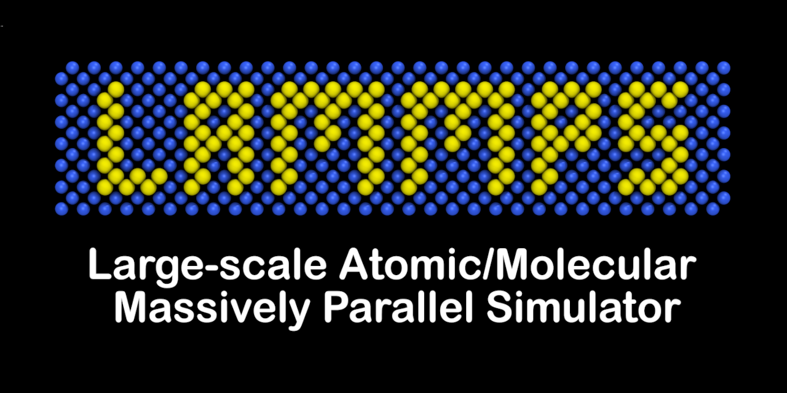
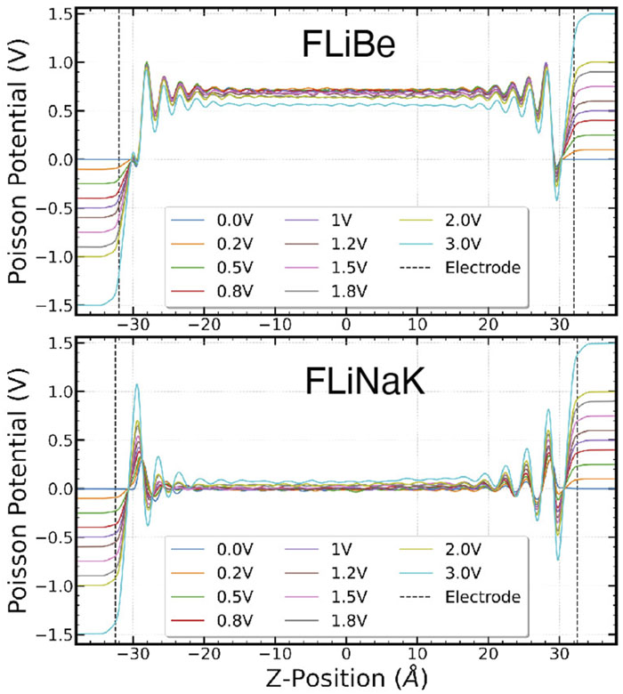

Conductors, Currents, and Coding
Constant Potential and Nonequilibrium Molecular Dynamics for the Electrode-Electrolyte Interface
Griffith University srtee.github.io
13 Sep 2023
About Me
About the Bernhardt Group (CTCMS, AIBN, UQ)

Prof Debra Bernhardt and the Bernhardt Group
Our Involvement with PaCER
The VISCOUS Project for Nanoflow Simulations

(slide with thanks from Dr Amy Geddes)
Takeaways from This Talk
Theory and computation can help everyone!
Classroom concepts matter to real research
Interdisciplinary curiosity brings rewards
(These slides presented with Quarto + RevealJS + GitHub Pages)
Electrode Molecular Dynamics in a (Conductive) Nutshell
Electrochemistry: Opportunities … and Questions
The history of science shows that any field can experience difficulties with research quality when the standards for metrics-oriented publications are poorly defined and the reward for such publications is high. (Akbashev 2022)
At the Interface: Continuum and Atomistic Models
Computational Methods for Electrochemistry
Conductive Molecular Dynamics

(Tee 2021)
Conductive Molecular Dynamics
Conductive Molecular Dynamics
Problem: Code and Community Limitations
Many packages … only one of these is set up for conductive MD on Gadi and Setonix in Australia!


Computational Efficiency Through Superior Theory
Conductive MD: Overview
For conductive molecular dynamics, we add terms to the potential energy for charging up the electrode due to the rest of the electrode, the electrolyte, and the imposed potential difference:
\[ U = U_0 + \color{red}{\frac{1}{2} \mathbf{q}^T \mathbf{A} \mathbf{q}} - \color{blue}{\mathbf{b}^T \mathbf{q}} - \color{green}{\Delta \psi \mathbf{d}^T \mathbf{q}} \]
We solve for the electrode charges by minimising energy, and this gets us:
\[ \mathbf{q^*} = \mathbf{A}^{-1}(\mathbf{b} + \Delta \psi \mathbf{d}) \]
Turns out this is pretty cheap (for non-moving electrode atoms)!
Fully Periodic Conductive MD
Fully Periodic Conductive MD: Accuracy
Fully Periodic Conductive MD: Efficiency
ELECTRODE: A Conductive MD Community Code Package
Hamburg University of Technology collab:
Constant Potential and Constrained Charge
A crazy slide from 2020:
Back to the Phys Chem Classroom
What if we just force the electrodes to have a particular total charge?
\[ U = U_0 + \color{red}{\frac{1}{2} \mathbf{q}^T \mathbf{A} \mathbf{q}} - \color{blue}{\mathbf{b}^T \mathbf{q}} \]
\[ \mathrm{constraint:} \,\,\,\,\,\color{green}{\Delta \psi \mathbf{d}^T \mathbf{q} = Q}\]
After some work we can relate the free energies:
\[ F_Q = F_{\Delta \psi} + Q \Delta \psi \]
and we have transformed between an intensive ensemble in \(\Delta \psi\) and an extensive ensemble in \(Q\) (Tee and Searles 2023).
A Physical Picture
Demonstrating Thermodynamic Equivalence
Demonstrating Thermodynamic Equivalence
Accelerated Convergence for Further Efficiency
Applications and Future Directions
Application: Capacitive Desalination
Application: Molten Salt-Metal Interfaces for Nuclear Reactors

Application: Endo- and exothermicity of double layer formation
Constant potential simulations (GROMACS) observing that electric double layer formation is overall exothermic in aqueous electrolytes, but endothermic for negative-polarized aqueous EDL and for ionic liquid EDLs. (Zeng et al. 2023)
Project: DFT Charge-Matching
Can we get close to DFT charges with constant potential molecular dynamics, and how close could our MD results get? Work ongoing with Xiaobo Lin (Vanderbilt University), Paul Kent (Oak Ridge Natl. Lab.) and Peter Cummings (Heriot-Watt University).
Results (In Review)
Project: Conductive MD with ML Potentials
Project: Fluxstatting
Force EOM:
\[ \begin{align*} \dot{\mathbf{q}}_i &= \mathbf{p}_i/m_i \\ \dot{\mathbf{p}}_i &= \mathbf{F}_i + \lambda \mathbf{i} - \alpha \mathbf{p}_i \end{align*} \]
Equations of motion with constant imposed force \(\lambda\)
Gauss Flux EOM:
\[ \begin{align*} \dot{\mathbf{q}}_i &= \mathbf{p}_i/m_i \\ \dot{\mathbf{p}}_i &= \mathbf{F}_i + \lambda(\Gamma)w_i\mathbf{i} - \alpha \mathbf{p}_i \\ \lambda(\Gamma) &= - \frac{\sum_i w_i \mathbf{F}_i\cdot \mathbf{i} }{\sum_i w_i} \end{align*} \]
Varying force \(\lambda(\Gamma)\) is a Gaussian fluxstat which constrains the weighted flux \(J \equiv \sum_i w_i \mathbf{p}_{i}\cdot\mathbf{i}\).
NH Flux EOM:
\[ \begin{align*} \dot{\mathbf{q}}_i &= \mathbf{p}_i/m_i \\ \dot{\mathbf{p}}_i &= \mathbf{F}_i + \lambda(t)w_i\mathbf{i} - \alpha \mathbf{p}_i \\ \dot{\lambda}(t) &\propto (J(\Gamma) - J_0) \end{align*} \]
Varying force is a Nose-Hoover fluxstat which restrains \(J\).
Some flows:
mass flow: \(w_i = 1\)
velocity: \(w_i = 1/m_i\)
current: \(w_i = c_i/m_i\)
Force (“Thevenin”) and flux (“Norton”) steady states with both Gaussian and NH “fluxstats” are first-order equivalent (?): (Standish and Evans 1993),(Evans 1993)
Results (In Academic Limbo)
Results (In Academic Limbo)
Results (In Academic Limbo)
Project: RSE Awareness in Australia
This illustration is created by Scriberia with The Turing Way community. Used under a CC-BY 4.0 licence. DOI: 10.5281/zenodo.3332807
Acknowledgements
Other collaborators:
Xiaobo Lin (Vanderbilt), Dr Paul Kent (ORNL), Prof Peter Cummings (Heriot-Watt)
Ludwig Ahrens-Iwers and Prof Robert Meissner (Hamburg University of Technology)


References
Thanks for Listening! Any Questions?
Takeaways reminder:
Theory and computation can help everyone!
Classroom concepts matter to real research
Interdisciplinary curiosity brings rewards
(These slides presented with Quarto + RevealJS + GitHub Pages)